Academic Journey
Research Internship
Measuring Collembola mouthpart traits during my research internship at Université du Québec à Montréal (UQAM), Canada, in 2019
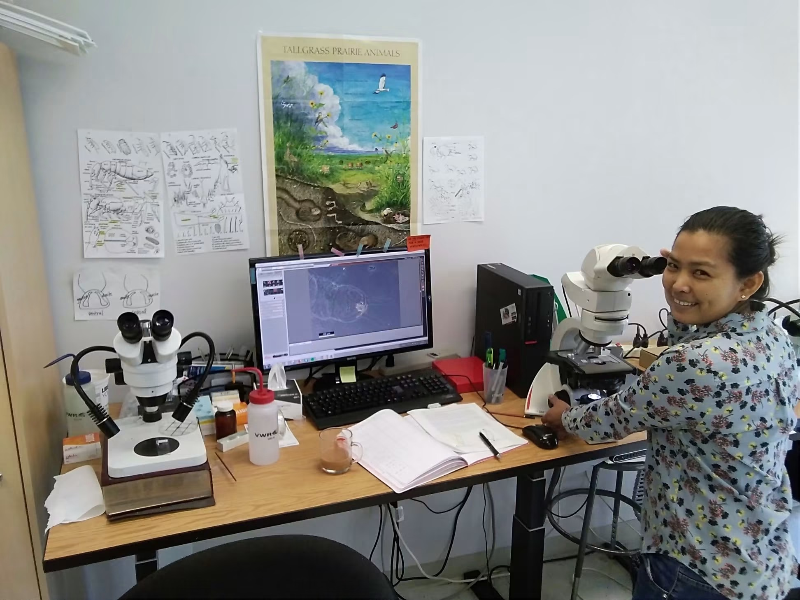
PhD Research
Field and laboratory work during my doctoral research at the University of Bern.
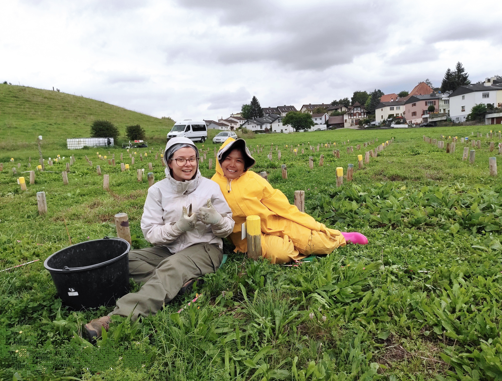
Fieldwork in the PaNDiv experiment during my PhD research
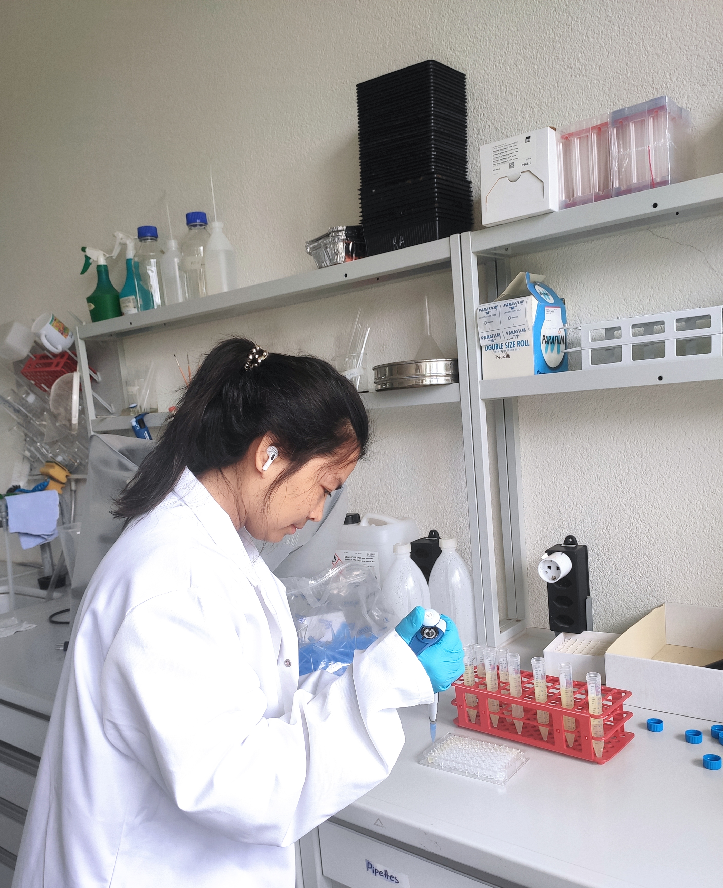
Soil enzyme activity measurements using microplate assays during my PhD research
PhD Defense in 2023
PhD defense at the University of Bern, Switzerland.
PhD research: Conducted within the large-scale PaNDiv grassland experiment, combining field and laboratory approaches to investigate the direct and indirect effects of nitrogen enrichment, plant diversity, and fungal pathogens on plant-soil interactions, soil organisms, and ecosystem processes.


Conference Presentations
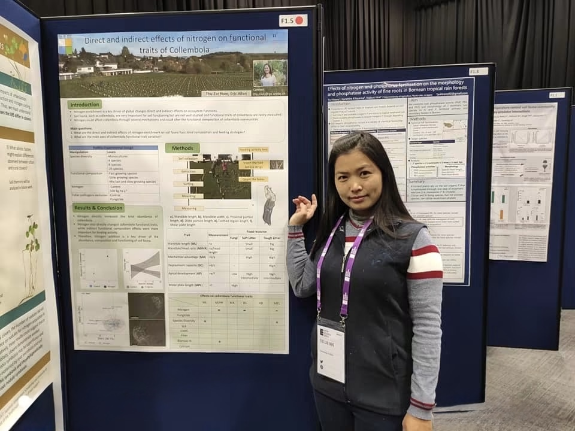
My first poster presentation during my PhD at BES.
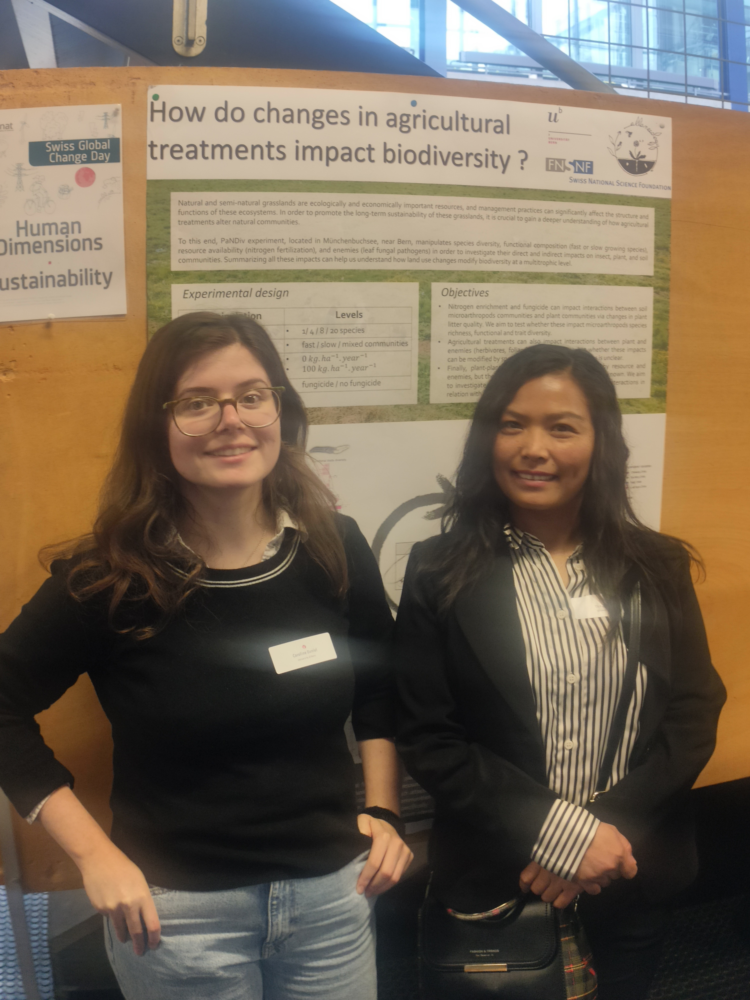
Presenting collaborative research at Swiss Global Change Day.
Research Groups & Collaborations
Research communities that have shaped my academic journey, from my PhD in Community Ecology to my current work in Plant Ecology.
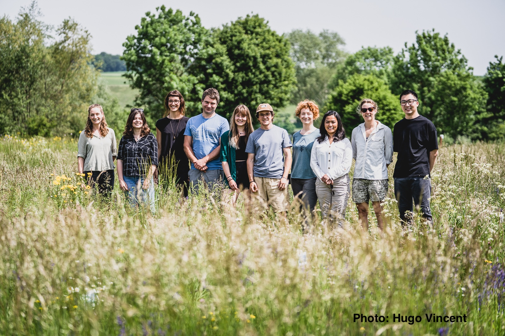
Community Ecology group during my PhD at the Institute of Plant Sciences, University of Bern.
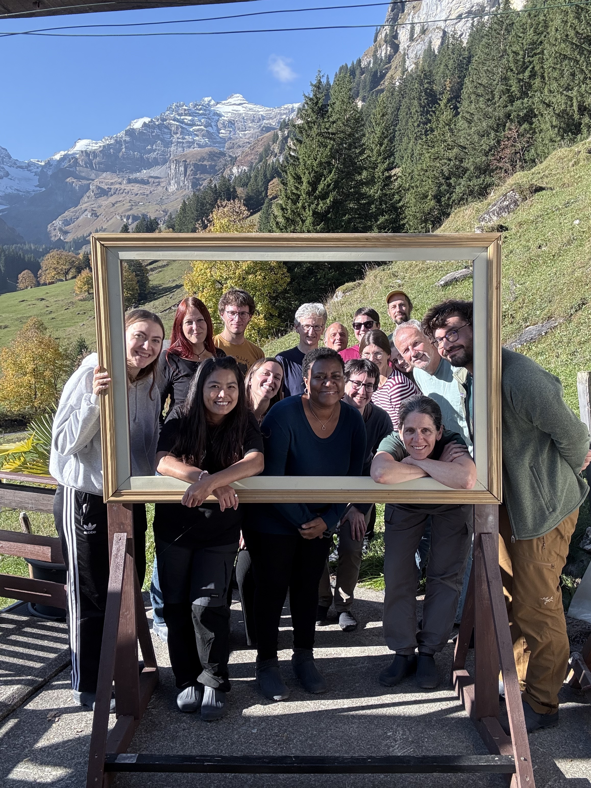
Plant Ecology group, where I currently work as a postdoctoral researcher, at the Institute of Plant Sciences, University of Bern.
Student Supervision & Fieldwork
Student research projects and practical fieldwork involving soil fauna, biodiversity, and ecological sampling.
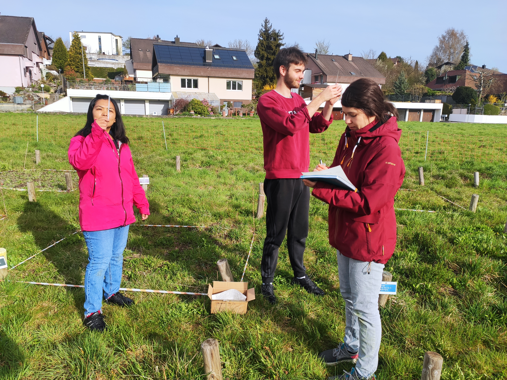
Bachelor student group project at PaNDiv
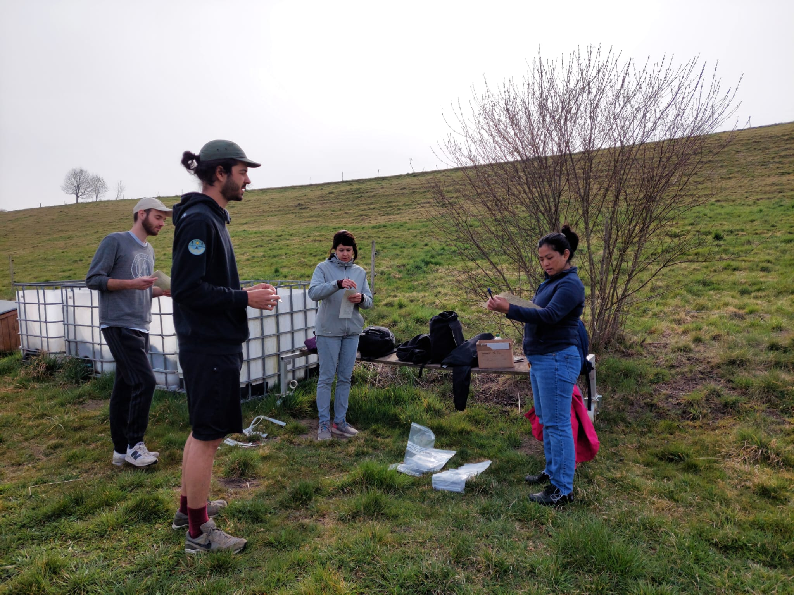
Refilling bait-lamina strips during a decomposition experiment
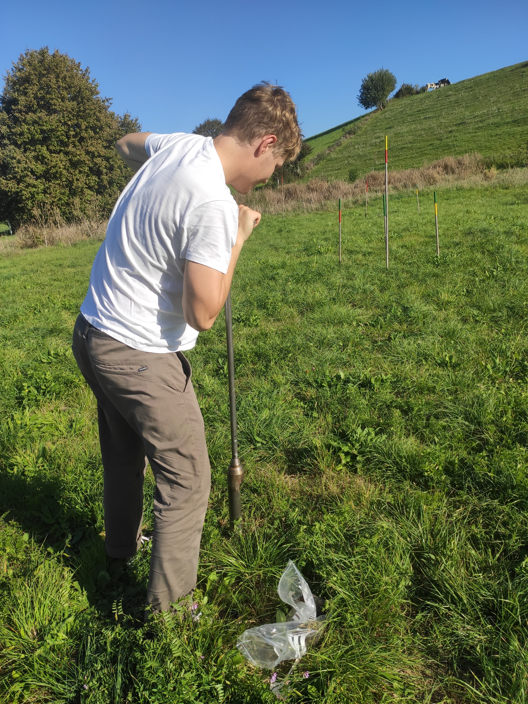
Student research project at BugNet
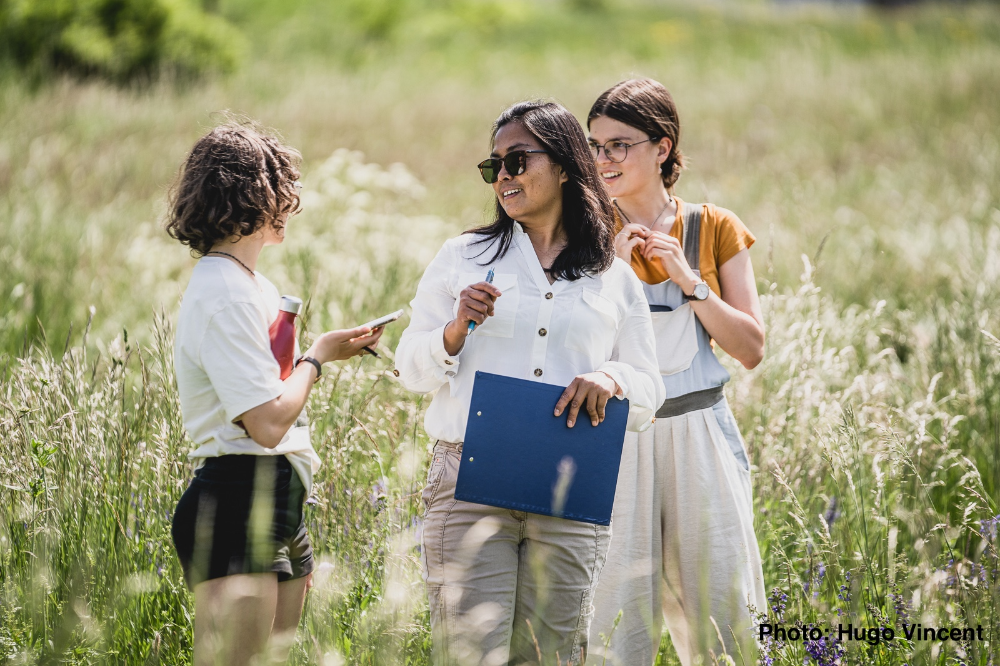
Practical fieldwork with students
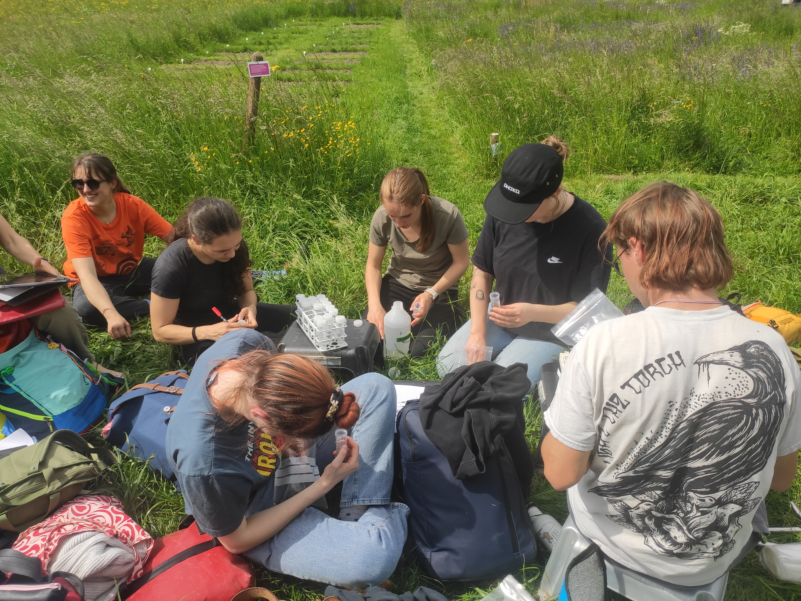
Students measuring soil nitrogen availability
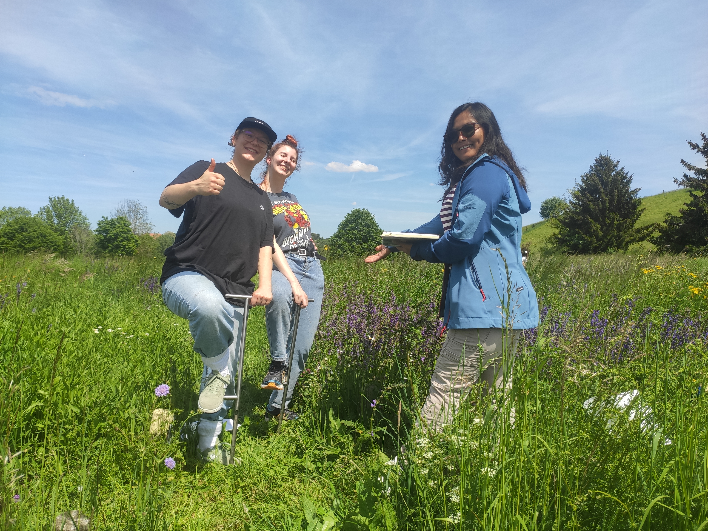
Student fieldwork and sampling